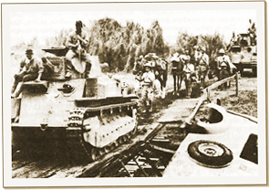

|
j
a v a s c r i p t |
March 26, 1942
Stayed home with a swollen left leg due to a bike accident yesterday. Manolo Herman came by to take a look at my radios and repair a shorted antenna. I gave him my overworked GE to fix and told him to replace any tube that wasn't perfect — hang the expense! — as it must serve me for the duration of the war. Now I'm up to date with the news again.

Fresh Japanese troops
I didn't need the radio to tell me that Bataan and Corregidor have been very heavily bombed in the last three days. Manila is steeling itself for the coming offensive in Bataan. We know this one will be for keeps. Gloomy Japanese faces are in evidence after they've received orders for the front. A few have been splurging their small pay on ice cream at the Astoria. After being called up to Bataan, one Korean even tried to bribe a bodegero† to hide him. Maurice is down to just 10 hens after selling 40 and losing 50 in an epidemic that defied our inoculation efforts. We have no eggs today although we still have plenty of young chicks. Sugar is plentiful these days and rice is still available at a 100% premium because there's no way to ship it out of Luzon. We might see a shortage when the rest of the country falls. † from bodega (warehouse) warehouseman |
|
|
|
|